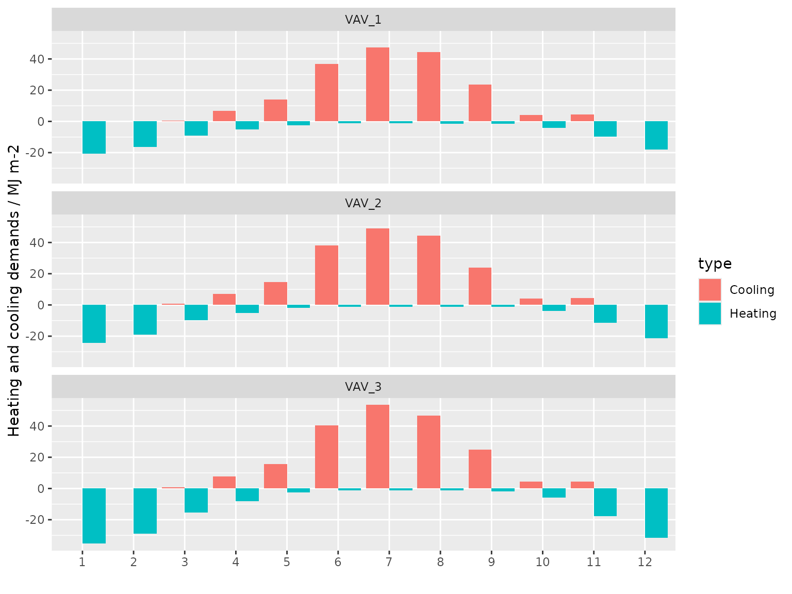

This vignette showcases the basic features of the EplusJob class with the main focus on how the tidy data interface can provide a seamless workflow to extract EnergyPlus output, feed it into data analysis pipelines and turn the results into understanding and knowledge.
Run simulations
The Idf class provides a $run() method to call EnergyPlus and run simulations. Underneath, eplusr uses the EnergyPlus command line interface which was introduced since EnergyPlus v8.3.0, which means that $run() only supports models with version higher than v8.3.0.
Idf$run() will run the current model with specified weather using corresponding version of EnergyPlus. The model and the weather used will be copied to the output directory. An EplusJob object will be returned which provides detailed information of the simulation and methods to collect simulation output. Please see ?EplusJob for details.
path_idf <- file.path(eplus_config(8.8)$dir, "ExampleFiles/5Zone_Transformer.idf")
path_epw <- file.path(eplus_config(8.8)$dir, "WeatherData/USA_CA_San.Francisco.Intl.AP.724940_TMY3.epw")
model <- read_idf(path_idf)
#> IDD v8.8.0 has not been parsed before.
#> Try to locate 'Energy+.idd' in EnergyPlus v8.8.0 installation folder '/usr/local/EnergyPlus-8-8-0'.
#> IDD file found: '/home/runner/.local/EnergyPlus-8-8-0/Energy+.idd'.
#> Start parsing...
#> Parsing completed.Run only design day simulation
Sometime, you may only want to run a design day simulation. Idf$run() provides a convenient way to do this by setting the weather argument to NULL.
job <- model$run(NULL, dir = tempdir(), wait = TRUE)
#> Adding an object in class 'Output:SQLite' and setting its 'Option Type' to 'SimpleAndTabular' in order to create SQLite output file.
#> EnergyPlus Starting
#> EnergyPlus, Version 8.8.0-7c3bbe4830, YMD=2021.11.07 09:56
#> Processing Data Dictionary
#> Processing Input File
#> Initializing Response Factors
#> Calculating CTFs for "ROOF-1", Construction # 1
#> Calculating CTFs for "WALL-1", Construction # 2
#> Calculating CTFs for "FLOOR-SLAB-1", Construction # 4
#> Calculating CTFs for "INT-WALL-1", Construction # 5
#> Initializing Window Optical Properties
....
class(job)
#> [1] "EplusJob" "R6"
job
#> ── EnergPlus Simulation Job ────────────────────────────────────────────────────
#> * Model: '/tmp/RtmpuKCuwS/5Zone_Transformer.idf'
#> * Weather: '<< Not specified >>'
#> * EnergyPlus Version: '8.8.0'
#> * EnergyPlus Path: '/home/runner/.local/EnergyPlus-8-8-0'
#> Simulation started at '2021-11-07 09:56:48' and completed successfully after 0.72 secs.job prints the path of model and weather, the version and path of EnergyPlus used to run simulations, and the simulation job status.
You can always retrieve the last simulation job of an Idf object using Idf$last_job() method:
model$last_job()
#> ── EnergPlus Simulation Job ────────────────────────────────────────────────────
#> * Model: '/tmp/RtmpuKCuwS/5Zone_Transformer.idf'
#> * Weather: '<< Not specified >>'
#> * EnergyPlus Version: '8.8.0'
#> * EnergyPlus Path: '/home/runner/.local/EnergyPlus-8-8-0'
#> Simulation started at '2021-11-07 09:56:48' and completed successfully after 0.72 secs.Run simulation in the background
By default, when calling Idf$run() method, R will hang on and wait for the simulation to complete. EnergyPlus standard output (stdout) and error (stderr) is printed to R console. You can make EnergyPlus run in the background by setting wait to FALSE. The simulation job status can be shown by printing the EplusJob object or using the EplusJob$status() method.
job <- model$run(path_epw, tempdir(), wait = FALSE)
#> Adding an object in class 'Output:SQLite' and setting its 'Option Type' to 'SimpleAndTabular' in order to create SQLite output file.
#> Replace the existing IDF located at /tmp/RtmpuKCuwS/5Zone_Transformer.idf.
job
#> ── EnergPlus Simulation Job ────────────────────────────────────────────────────
#> * Model: '/tmp/RtmpuKCuwS/5Zone_Transformer.idf'
#> * Weather: '/home/runner/.local/EnergyPlus-8-8-0/WeatherData/USA_CA_San.Fra...
#> * EnergyPlus Version: '8.8.0'
#> * EnergyPlus Path: '/home/runner/.local/EnergyPlus-8-8-0'
#> Simulation started at '2021-11-07 09:56:49' and is still running...
job$status()
#> $run_before
#> [1] TRUE
#>
#> $alive
#> [1] TRUE
#>
#> $terminated
#> [1] FALSE
#>
#> $successful
#> [1] NA
#>
#> $changed_after
#> [1] FALSEPrint simulation errors
You can get simulation errors using EplusJob$errors().
print(job$errors())
#> ══ EnergyPlus Error File ═══════════════════════════════════════════════════════
#> * EnergyPlus version: 8.8.0 (7c3bbe4830)
#> * Simulation started: 2021-11-07 09:56:00
#> * Terminated: FALSE
#> * Successful: TRUE
#> * Warning[W]: 1
#>
#> ── During Zone Sizing Calculations ─────────────────────────────────────────────
#> [W 1/1] Weather file location will be used rather than entered (IDF) Location
#> object.
#> ..Location object=CHICAGO_IL_USA TMY2-94846
#> ..Weather File Location=San Francisco Intl Ap CA USA TMY3 WMO#=724940
#> ..due to location differences, Latitude difference=[4.16] degrees,
#> Longitude difference=[34.65] degrees.
#> ..Time Zone difference=[2.0] hour(s), Elevation difference=[98.95]
#> percent, [188.00] meters.Retrieve simulation output
eplusr uses the EnergyPlus SQL output for extracting simulation output. In order to do so, an object in Output:SQLite class with Option Type value of SimpleAndTabular will be automatically created if it does not exists. EplusJob has provided some wrappers that do SQL queries to get report data results, i.e. results from Output:Variable and Output:Meter*. But for Output:Table results, you have to be familiar with the structure of the EnergyPlus SQL output, especially for table “TabularDataWithStrings”. For details, please see “2.20 eplusout.sql”, especially “2.20.4.4 TabularData Table” in EnergyPlus “Output Details and Examples” documentation.
Tidy data interface
EplusJob class is designed to extract and represent EnergyPlus simulation results from the SQLite output into tidy tables. The layout ensures that values of different variables from the same observation are always paired and is well fitted for data analyses using the tidyverse R package ecosystem.
Table (a) in figure below shows an example of the standard format from EnergyPlus CSV table output, while Table (b) gives the tidy representation of the same underlying data.
Although the structure of Table (a) provides efficient storage for completely crossed designs, it violates with the tidy principles, as variables form both the rows and columns and column headers are values, not variable names. Additional data cleaning efforts are needed to work with this structure, especially considering the missing values (NA in row 2 and 4 in Table (a)) introduced by the aggregation of various reporting frequencies, which may add new inefficiencies and potential errors.
In Table (b), values in column headers have been extracted and converted into separate columns, and a new variable called Value is used to store the concatenated data values from the previously separate columns. Moreover, instead of presenting date and time as strings in Table (a), the tidy data interface splits its components into four new variables, including Month, Day, Hour and Minute. Taken together, Table (b) forms a nine-variable tidy table and each variable matches the semantics of simulation output.

An example of tidy BES output data representation where Table (a) is the standard output format of EnergyPlus CSV table and Table (b) is the tidy representation of the same underlying data
Get all possible output meta data
EplusJob$report_data_dict() returns a data.table which contains meta data of report data for current simulation. For details on the meaning of each columns, please see “2.20.2.1 ReportDataDictionary Table” in EnergyPlus “Output Details and Examples” documentation. The most useful columns are:
-
key_value: Key name of the data -
name: Actual report data name -
is_meter: Whether report data is a meter data. Possible values:0and1 -
reporting_frequency: Data reporting frequency -
units: The data units
print(job$report_data_dict())
#> report_data_dictionary_index is_meter type
#> 1: 6 0 Avg
#> 2: 8 1 Sum
#> 3: 18 1 Sum
#> 4: 38 1 Sum
#> 5: 238 1 Sum
#> 6: 459 0 Avg
#> 7: 460 0 Avg
#> 8: 461 0 Sum
#> 9: 462 0 Avg
#> 10: 463 0 Sum
#> 11: 464 0 Avg
#> 12: 465 0 Sum
#> 13: 466 0 Avg
#> 14: 467 0 Sum
#> 15: 468 0 Avg
#> 16: 469 0 Sum
#> 17: 470 0 Sum
#> 18: 471 1 Sum
#> 19: 703 1 Sum
#> 20: 786 1 Sum
#> index_group timestep_type key_value
#> 1: Zone HVAC System Environment
#> 2: Facility:Electricity HVAC System
#> 3: Building:Electricity HVAC System
#> 4: Facility:Electricity:InteriorLights HVAC System
#> 5: Building:EnergyTransfer HVAC System
#> 6: System Zone TRANSFORMER 1
#> 7: System Zone TRANSFORMER 1
#> 8: System Zone TRANSFORMER 1
#> 9: System Zone TRANSFORMER 1
#> 10: System Zone TRANSFORMER 1
#> 11: System Zone TRANSFORMER 1
#> 12: System Zone TRANSFORMER 1
#> 13: System Zone TRANSFORMER 1
#> 14: System Zone TRANSFORMER 1
#> 15: System Zone TRANSFORMER 1
#> 16: System Zone TRANSFORMER 1
#> 17: System Zone TRANSFORMER 1
#> 18: HVAC:Electricity HVAC System
#> 19: Facility:Electricity:Fans HVAC System
#> 20: Plant:Electricity HVAC System
#> name reporting_frequency
#> 1: Site Outdoor Air Drybulb Temperature Zone Timestep
#> 2: Electricity:Facility Zone Timestep
#> 3: Electricity:Building Zone Timestep
#> 4: InteriorLights:Electricity Zone Timestep
#> 5: EnergyTransfer:Building Zone Timestep
#> 6: Transformer Efficiency Zone Timestep
#> 7: Transformer Input Electric Power Zone Timestep
#> 8: Transformer Input Electric Energy Zone Timestep
#> 9: Transformer Output Electric Power Zone Timestep
#> 10: Transformer Output Electric Energy Zone Timestep
#> 11: Transformer No Load Loss Rate Zone Timestep
#> 12: Transformer No Load Loss Energy Zone Timestep
#> 13: Transformer Load Loss Rate Zone Timestep
#> 14: Transformer Load Loss Energy Zone Timestep
#> 15: Transformer Thermal Loss Rate Zone Timestep
#> 16: Transformer Thermal Loss Energy Zone Timestep
#> 17: Transformer Distribution Electric Loss Energy Zone Timestep
#> 18: Electricity:HVAC Zone Timestep
#> 19: Fans:Electricity Zone Timestep
#> 20: Electricity:Plant Zone Timestep
#> schedule_name units
#> 1: <NA> C
#> 2: <NA> J
#> 3: <NA> J
#> 4: <NA> J
#> 5: <NA> J
#> 6: <NA>
#> 7: <NA> W
#> 8: <NA> J
#> 9: <NA> W
#> 10: <NA> J
#> 11: <NA> W
#> 12: <NA> J
#> 13: <NA> W
#> 14: <NA> J
#> 15: <NA> W
#> 16: <NA> J
#> 17: <NA> J
#> 18: <NA> J
#> 19: <NA> J
#> 20: <NA> JRetrieve report data
EplusJob$report_data() extracts the report data using key values and variable names. Just for demonstration, let’s get the transformer input electric power at 11 a.m for the first day of RunPeriod named SUMMERDAY, tag this simulation as case example, and return all possible output columns.
power <- job$report_data("transformer 1", "transformer input electric power", case = "example",
all = TRUE, simulation_days = 1, environment_name = "summerday", hour = 11, minute = 0)
print(power)
#> case datetime month day hour minute dst interval
#> 1: example 2015-07-07 11:00:00 7 7 11 0 0 15
#> simulation_days day_type environment_name environment_period_index is_meter
#> 1: 1 Tuesday SUMMERDAY 4 0
#> type index_group timestep_type key_value
#> 1: Avg System Zone TRANSFORMER 1
#> name reporting_frequency schedule_name units
#> 1: Transformer Input Electric Power Zone Timestep <NA> W
#> value
#> 1: 12273.17Please note that by default the report data of design day simulations are always put at the top. If you are only interested in results of specific run periods, there are 2 ways to do so:
- Set
environment_nameto the run periods you are interested, e.g.:
job$report_data(environment_name = c("summerday", "winterday"))
#> case datetime key_value
#> 1: 5Zone_Transformer 2014-01-14 00:15:00 Environment
#> 2: 5Zone_Transformer 2014-01-14 00:30:00 Environment
#> 3: 5Zone_Transformer 2014-01-14 00:45:00 Environment
#> 4: 5Zone_Transformer 2014-01-14 01:00:00 Environment
#> 5: 5Zone_Transformer 2014-01-14 01:15:00 Environment
#> ---
#> 3836: 5Zone_Transformer 2015-07-07 23:00:00
#> 3837: 5Zone_Transformer 2015-07-07 23:15:00
#> 3838: 5Zone_Transformer 2015-07-07 23:30:00
#> 3839: 5Zone_Transformer 2015-07-07 23:45:00
#> 3840: 5Zone_Transformer 2015-07-08 00:00:00
#> name units value
#> 1: Site Outdoor Air Drybulb Temperature C 9.900
#> 2: Site Outdoor Air Drybulb Temperature C 9.200
#> 3: Site Outdoor Air Drybulb Temperature C 8.500
#> 4: Site Outdoor Air Drybulb Temperature C 7.800
#> 5: Site Outdoor Air Drybulb Temperature C 8.075
#> ---
#> 3836: Electricity:Plant J 0.000
#> 3837: Electricity:Plant J 0.000
#> 3838: Electricity:Plant J 0.000
#> 3839: Electricity:Plant J 0.000
#> 3840: Electricity:Plant J 0.000- Set
day_typeto specific day types you are interested. A few grouped options are also provided:-
"Weekday": All working days, i.e. from"Monday"to"Friday" -
"Weekend":"Saturday"and"Sunday" -
"DesignDay": Equivalent to"SummerDesignDay"plus"WinterDesignDay" -
"CustomDay":"CustomDay1"and"CustomDay2" -
"SpecialDay": Equivalent to"DesignDay"plus"CustomDay" -
"NormalDay": Equivalent to"Weekday"and"Weekend"plus"Holiday"
-
job$report_data(day_type = "normalday")
#> case datetime key_value
#> 1: 5Zone_Transformer 2014-01-14 00:15:00 Environment
#> 2: 5Zone_Transformer 2014-01-14 00:30:00 Environment
#> 3: 5Zone_Transformer 2014-01-14 00:45:00 Environment
#> 4: 5Zone_Transformer 2014-01-14 01:00:00 Environment
#> 5: 5Zone_Transformer 2014-01-14 01:15:00 Environment
#> ---
#> 3836: 5Zone_Transformer 2015-07-07 23:00:00
#> 3837: 5Zone_Transformer 2015-07-07 23:15:00
#> 3838: 5Zone_Transformer 2015-07-07 23:30:00
#> 3839: 5Zone_Transformer 2015-07-07 23:45:00
#> 3840: 5Zone_Transformer 2015-07-08 00:00:00
#> name units value
#> 1: Site Outdoor Air Drybulb Temperature C 9.900
#> 2: Site Outdoor Air Drybulb Temperature C 9.200
#> 3: Site Outdoor Air Drybulb Temperature C 8.500
#> 4: Site Outdoor Air Drybulb Temperature C 7.800
#> 5: Site Outdoor Air Drybulb Temperature C 8.075
#> ---
#> 3836: Electricity:Plant J 0.000
#> 3837: Electricity:Plant J 0.000
#> 3838: Electricity:Plant J 0.000
#> 3839: Electricity:Plant J 0.000
#> 3840: Electricity:Plant J 0.000$report_data() can also directly take the whole or subset results of $report_data_dict() to extract report data. In some case this may be quite handy. Let’s get all report variable with Celsius degree unit.
print(job$report_data(job$report_data_dict()[units == "C"]))
#> case datetime key_value
#> 1: 5Zone_Transformer 2014-01-14 00:15:00 Environment
#> 2: 5Zone_Transformer 2014-01-14 00:30:00 Environment
#> 3: 5Zone_Transformer 2014-01-14 00:45:00 Environment
#> 4: 5Zone_Transformer 2014-01-14 01:00:00 Environment
#> 5: 5Zone_Transformer 2014-01-14 01:15:00 Environment
#> ---
#> 188: 5Zone_Transformer 2015-07-07 23:00:00 Environment
#> 189: 5Zone_Transformer 2015-07-07 23:15:00 Environment
#> 190: 5Zone_Transformer 2015-07-07 23:30:00 Environment
#> 191: 5Zone_Transformer 2015-07-07 23:45:00 Environment
#> 192: 5Zone_Transformer 2015-07-08 00:00:00 Environment
#> name units value
#> 1: Site Outdoor Air Drybulb Temperature C 9.900
#> 2: Site Outdoor Air Drybulb Temperature C 9.200
#> 3: Site Outdoor Air Drybulb Temperature C 8.500
#> 4: Site Outdoor Air Drybulb Temperature C 7.800
#> 5: Site Outdoor Air Drybulb Temperature C 8.075
#> ---
#> 188: Site Outdoor Air Drybulb Temperature C 15.200
#> 189: Site Outdoor Air Drybulb Temperature C 15.100
#> 190: Site Outdoor Air Drybulb Temperature C 15.000
#> 191: Site Outdoor Air Drybulb Temperature C 14.900
#> 192: Site Outdoor Air Drybulb Temperature C 14.800Retrieve tabular data
EplusJob$tabular_data() extracts tabular data of current simulation. For details on the meaning of each columns, please see “2.20.4.4 TabularData Table” in EnergyPlus “Output Details and Examples” documentation.
Now let’s get the total site energy per total building area. Note that the value column in the returned data.table is character types, as some table store not just numbers. We need to convert it by setting string_value to FALSE.
site_energy <- job$tabular_data(
column_name = "energy per total building area", row_name = "total site energy",
wide = TRUE, string_value = FALSE
)[[1]]
print(site_energy)
#> case report_name report_for
#> 1: 5Zone_Transformer AnnualBuildingUtilityPerformanceSummary Entire Facility
#> table_name row_name
#> 1: Site and Source Energy Total Site Energy
#> Energy Per Total Building Area [MJ/m2]
#> 1: 1.44Data exploration example
Data exploration is an essential aspect of building energy simulation. In this example, we will demonstrates the data exploration process of obtaining:
- energy use intensity (EUI)
- heating and cooling demand profile
Run annual simulation
path_model <- file.path(eplus_config(8.8)$dir, "ExampleFiles/RefBldgMediumOfficeNew2004_Chicago.idf")
path_weather <- file.path(eplus_config(8.8)$dir, "WeatherData/USA_IL_Chicago-OHare.Intl.AP.725300_TMY3.epw")
idf <- read_idf(path_model)
# make sure weather file input is respected
idf$SimulationControl$Run_Simulation_for_Weather_File_Run_Periods <- "Yes"
# make sure energy consumption is presented in kWh
idf$OutputControl_Table_Style$Unit_Conversion <- "JtoKWH"
# save the modified model into a temporary folder
idf$save(file.path(tempdir(), "MediumOffice.idf"), overwrite = TRUE)
# run annual simulation
job <- idf$run(path_weather, echo = FALSE)Extract simulation results
Code below shows how to use methods tabular_data(), read_table() and report_data() provided by the tidy data interface in EplusJob to extract building area and building energy consumption, zone meta data, and cooling and heating demands, with all formatted in a tidy representation.
Note that instead of presenting the simulated date and time as strings, the report_data() adds a time-series column datetime in POSIXct based on a derived year value. Moreover, the tidy data interface also provides a number of additional columns, which makes it quite convenient and straightforward to directly perform further data transformations.
# read building area from Standard Reports
print(area <- job$tabular_data(table_name = "Building Area", wide = TRUE)[[1L]])
#> case report_name report_for
#> 1: MediumOffice AnnualBuildingUtilityPerformanceSummary Entire Facility
#> 2: MediumOffice AnnualBuildingUtilityPerformanceSummary Entire Facility
#> 3: MediumOffice AnnualBuildingUtilityPerformanceSummary Entire Facility
#> table_name row_name Area [m2]
#> 1: Building Area Total Building Area 4982.19
#> 2: Building Area Net Conditioned Building Area 4982.19
#> 3: Building Area Unconditioned Building Area 0.00
# read building energy consumption from Standard Reports
print(end_use <- job$tabular_data(table_name = "End Uses", wide = TRUE)[[1L]])
#> case report_name report_for
#> 1: MediumOffice AnnualBuildingUtilityPerformanceSummary Entire Facility
#> 2: MediumOffice AnnualBuildingUtilityPerformanceSummary Entire Facility
#> 3: MediumOffice AnnualBuildingUtilityPerformanceSummary Entire Facility
#> 4: MediumOffice AnnualBuildingUtilityPerformanceSummary Entire Facility
#> 5: MediumOffice AnnualBuildingUtilityPerformanceSummary Entire Facility
#> 6: MediumOffice AnnualBuildingUtilityPerformanceSummary Entire Facility
#> 7: MediumOffice AnnualBuildingUtilityPerformanceSummary Entire Facility
#> 8: MediumOffice AnnualBuildingUtilityPerformanceSummary Entire Facility
#> 9: MediumOffice AnnualBuildingUtilityPerformanceSummary Entire Facility
#> 10: MediumOffice AnnualBuildingUtilityPerformanceSummary Entire Facility
#> 11: MediumOffice AnnualBuildingUtilityPerformanceSummary Entire Facility
#> 12: MediumOffice AnnualBuildingUtilityPerformanceSummary Entire Facility
#> 13: MediumOffice AnnualBuildingUtilityPerformanceSummary Entire Facility
#> 14: MediumOffice AnnualBuildingUtilityPerformanceSummary Entire Facility
#> 15: MediumOffice AnnualBuildingUtilityPerformanceSummary Entire Facility
#> table_name row_name Electricity [kWh] Natural Gas [kWh]
#> 1: End Uses Heating 138167.50 57334.62
#> 2: End Uses Cooling 71922.07 0.00
#> 3: End Uses Interior Lighting 168399.82 0.00
#> 4: End Uses Exterior Lighting 64602.19 0.00
#> 5: End Uses Interior Equipment 296256.25 0.00
#> 6: End Uses Exterior Equipment 0.00 0.00
#> 7: End Uses Fans 18786.52 0.00
#> 8: End Uses Pumps 73.94 0.00
#> 9: End Uses Heat Rejection 0.00 0.00
#> 10: End Uses Humidification 0.00 0.00
#> 11: End Uses Heat Recovery 0.00 0.00
#> 12: End Uses Water Systems 0.00 10030.79
#> 13: End Uses Refrigeration 0.00 0.00
#> 14: End Uses Generators 0.00 0.00
#> 15: End Uses Total End Uses 758208.29 67365.41
#> Additional Fuel [kWh] District Cooling [kWh] District Heating [kWh]
#> 1: 0 0 0
#> 2: 0 0 0
#> 3: 0 0 0
#> 4: 0 0 0
#> 5: 0 0 0
#> 6: 0 0 0
#> 7: 0 0 0
#> 8: 0 0 0
#> 9: 0 0 0
#> 10: 0 0 0
#> 11: 0 0 0
#> 12: 0 0 0
#> 13: 0 0 0
#> 14: 0 0 0
#> 15: 0 0 0
#> Water [m3]
#> 1: 0.00
#> 2: 0.00
#> 3: 0.00
#> 4: 0.00
#> 5: 0.00
#> 6: 0.00
#> 7: 0.00
#> 8: 0.00
#> 9: 0.00
#> 10: 0.00
#> 11: 0.00
#> 12: 174.59
#> 13: 0.00
#> 14: 0.00
#> 15: 174.59
# read zone metadata from Standard Input and Output
print(zones <- job$read_table("Zones"))
#> zone_index zone_name rel_north origin_x origin_y origin_z
#> 1: 1 CORE_BOTTOM 0 0 0 0
#> 2: 2 CORE_MID 0 0 0 0
#> 3: 3 CORE_TOP 0 0 0 0
#> 4: 4 FIRSTFLOOR_PLENUM 0 0 0 0
#> 5: 5 MIDFLOOR_PLENUM 0 0 0 0
#> 6: 6 PERIMETER_BOT_ZN_1 0 0 0 0
#> 7: 7 PERIMETER_BOT_ZN_2 0 0 0 0
#> 8: 8 PERIMETER_BOT_ZN_3 0 0 0 0
#> 9: 9 PERIMETER_BOT_ZN_4 0 0 0 0
#> 10: 10 PERIMETER_MID_ZN_1 0 0 0 0
#> 11: 11 PERIMETER_MID_ZN_2 0 0 0 0
#> 12: 12 PERIMETER_MID_ZN_3 0 0 0 0
#> 13: 13 PERIMETER_MID_ZN_4 0 0 0 0
#> 14: 14 PERIMETER_TOP_ZN_1 0 0 0 0
#> 15: 15 PERIMETER_TOP_ZN_2 0 0 0 0
#> 16: 16 PERIMETER_TOP_ZN_3 0 0 0 0
#> 17: 17 PERIMETER_TOP_ZN_4 0 0 0 0
#> 18: 18 TOPFLOOR_PLENUM 0 0 0 0
#> centroid_x centroid_y centroid_z of_type multiplier list_multiplier
#> 1: 24.955350 16.636900 1.3716 1 1 1
#> 2: 24.955350 16.636900 5.3340 1 1 1
#> 3: 24.955350 16.636900 9.2964 1 1 1
#> 4: 24.955500 16.636900 3.3528 1 1 1
#> 5: 24.955500 16.636900 7.3152 1 1 1
#> 6: 24.955448 2.158891 1.3716 1 1 1
#> 7: 47.820225 16.636900 1.3716 1 1 1
#> 8: 24.955448 31.114909 1.3716 1 1 1
#> 9: 2.090634 16.636900 1.3716 1 1 1
#> 10: 24.955448 2.158891 5.3340 1 1 1
#> 11: 47.820225 16.636900 5.3340 1 1 1
#> 12: 24.955448 31.114909 5.3340 1 1 1
#> 13: 2.090634 16.636900 5.3340 1 1 1
#> 14: 24.955448 2.158891 9.2964 1 1 1
#> 15: 47.820225 16.636900 9.2964 1 1 1
#> 16: 24.955448 31.114909 9.2964 1 1 1
#> 17: 2.090634 16.636900 9.2964 1 1 1
#> 18: 24.955500 16.636900 11.2776 1 1 1
#> minimum_x maximum_x minimum_y maximum_y minimum_z maximum_z ceiling_height
#> 1: 4.5732 45.3375 4.5732 28.7006 0.0000 2.7432 2.7432
#> 2: 4.5732 45.3375 4.5732 28.7006 3.9624 6.7056 2.7432
#> 3: 4.5732 45.3375 4.5732 28.7006 7.9248 10.6680 2.7432
#> 4: 0.0000 49.9110 0.0000 33.2738 2.7432 3.9624 1.2192
#> 5: 0.0000 49.9110 0.0000 33.2738 6.7056 7.9248 1.2192
#> 6: 0.0000 49.9110 0.0000 4.5732 0.0000 2.7432 2.7432
#> 7: 45.3375 49.9110 0.0000 33.2738 0.0000 2.7432 2.7432
#> 8: 0.0000 49.9110 28.7006 33.2738 0.0000 2.7432 2.7432
#> 9: 0.0000 4.5732 0.0000 33.2738 0.0000 2.7432 2.7432
#> 10: 0.0000 49.9110 0.0000 4.5732 3.9624 6.7056 2.7432
#> 11: 45.3375 49.9110 0.0000 33.2738 3.9624 6.7056 2.7432
#> 12: 0.0000 49.9110 28.7006 33.2738 3.9624 6.7056 2.7432
#> 13: 0.0000 4.5732 0.0000 33.2738 3.9624 6.7056 2.7432
#> 14: 0.0000 49.9110 0.0000 4.5732 7.9248 10.6680 2.7432
#> 15: 45.3375 49.9110 0.0000 33.2738 7.9248 10.6680 2.7432
#> 16: 0.0000 49.9110 28.7006 33.2738 7.9248 10.6680 2.7432
#> 17: 0.0000 4.5732 0.0000 33.2738 7.9248 10.6680 2.7432
#> 18: 0.0000 49.9110 0.0000 33.2738 10.6680 11.8872 1.2192
#> volume inside_convection_algo outside_convection_algo floor_area
#> 1: 2698.0375 2 7 983.5366
#> 2: 2698.0375 2 7 983.5366
#> 3: 2698.0375 2 7 983.5366
#> 4: 2024.7603 2 7 1660.7286
#> 5: 2024.7603 2 7 1660.7286
#> 6: 568.7700 2 7 207.3381
#> 7: 360.0785 2 7 131.2622
#> 8: 568.7700 2 7 207.3381
#> 9: 360.0548 2 7 131.2536
#> 10: 568.7700 2 7 207.3381
#> 11: 360.0785 2 7 131.2622
#> 12: 568.7700 2 7 207.3381
#> 13: 360.0548 2 7 131.2536
#> 14: 568.7700 2 7 207.3381
#> 15: 360.0785 2 7 131.2622
#> 16: 568.7700 2 7 207.3381
#> 17: 360.0548 2 7 131.2536
#> 18: 2024.7603 2 7 1660.7286
#> ext_gross_wall_area ext_net_wall_area ext_window_area is_part_of_total_area
#> 1: 0.00000 0.00000 0.00000 1
#> 2: 0.00000 0.00000 0.00000 1
#> 3: 0.00000 0.00000 0.00000 1
#> 4: 202.83782 202.83782 0.00000 0
#> 5: 202.83782 202.83782 0.00000 0
#> 6: 136.91586 71.63358 65.28228 1
#> 7: 91.27669 47.75469 43.52200 1
#> 8: 136.91586 71.63358 65.28228 1
#> 9: 91.27669 47.75469 43.52200 1
#> 10: 136.91586 71.63358 65.28228 1
#> 11: 91.27669 47.75469 43.52200 1
#> 12: 136.91586 71.63358 65.28228 1
#> 13: 91.27669 47.75469 43.52200 1
#> 14: 136.91586 71.63358 65.28228 1
#> 15: 91.27669 47.75469 43.52200 1
#> 16: 136.91586 71.63358 65.28228 1
#> 17: 91.27669 47.75469 43.52200 1
#> 18: 202.83782 202.83782 0.00000 0
# read hourly air-conditioning system output with all additional metadata for
# the annual simulation from Variable Output
print(aircon_out <- job$report_data(
name = sprintf("air system total %s energy", c("heating", "cooling")),
environment_name = "annual",
all = TRUE
))
#> case datetime month day hour minute dst interval
#> 1: MediumOffice 2017-01-01 01:00:00 1 1 1 0 0 60
#> 2: MediumOffice 2017-01-01 02:00:00 1 1 2 0 0 60
#> 3: MediumOffice 2017-01-01 03:00:00 1 1 3 0 0 60
#> 4: MediumOffice 2017-01-01 04:00:00 1 1 4 0 0 60
#> 5: MediumOffice 2017-01-01 05:00:00 1 1 5 0 0 60
#> ---
#> 52556: MediumOffice 2017-12-31 20:00:00 12 31 20 0 0 60
#> 52557: MediumOffice 2017-12-31 21:00:00 12 31 21 0 0 60
#> 52558: MediumOffice 2017-12-31 22:00:00 12 31 22 0 0 60
#> 52559: MediumOffice 2017-12-31 23:00:00 12 31 23 0 0 60
#> 52560: MediumOffice 2018-01-01 00:00:00 12 31 24 0 0 60
#> simulation_days day_type environment_name environment_period_index
#> 1: 1 Holiday ANNUAL 3
#> 2: 1 Holiday ANNUAL 3
#> 3: 1 Holiday ANNUAL 3
#> 4: 1 Holiday ANNUAL 3
#> 5: 1 Holiday ANNUAL 3
#> ---
#> 52556: 365 Sunday ANNUAL 3
#> 52557: 365 Sunday ANNUAL 3
#> 52558: 365 Sunday ANNUAL 3
#> 52559: 365 Sunday ANNUAL 3
#> 52560: 365 Sunday ANNUAL 3
#> is_meter type index_group timestep_type key_value
#> 1: 0 Sum HVAC Zone VAV_1
#> 2: 0 Sum HVAC Zone VAV_1
#> 3: 0 Sum HVAC Zone VAV_1
#> 4: 0 Sum HVAC Zone VAV_1
#> 5: 0 Sum HVAC Zone VAV_1
#> ---
#> 52556: 0 Sum HVAC Zone VAV_3
#> 52557: 0 Sum HVAC Zone VAV_3
#> 52558: 0 Sum HVAC Zone VAV_3
#> 52559: 0 Sum HVAC Zone VAV_3
#> 52560: 0 Sum HVAC Zone VAV_3
#> name reporting_frequency schedule_name units
#> 1: Air System Total Heating Energy Hourly <NA> J
#> 2: Air System Total Heating Energy Hourly <NA> J
#> 3: Air System Total Heating Energy Hourly <NA> J
#> 4: Air System Total Heating Energy Hourly <NA> J
#> 5: Air System Total Heating Energy Hourly <NA> J
#> ---
#> 52556: Air System Total Cooling Energy Hourly <NA> J
#> 52557: Air System Total Cooling Energy Hourly <NA> J
#> 52558: Air System Total Cooling Energy Hourly <NA> J
#> 52559: Air System Total Cooling Energy Hourly <NA> J
#> 52560: Air System Total Cooling Energy Hourly <NA> J
#> value
#> 1: 32721496
#> 2: 35026830
#> 3: 46498023
#> 4: 35878580
#> 5: 47932856
#> ---
#> 52556: 0
#> 52557: 0
#> 52558: 0
#> 52559: 0
#> 52560: 0Data exploration using tidyverse
Code below demonstrate the benefits of the tidy format in selecting columns using select(), subsetting rows using filter(), sorting rows using arrange(), adding new variables using mutate(), summarizing data using a combination of group_by() and summarize(), joining tables using left_join(), and data visualization using ggplot().
Get EUI breakdown
library(dplyr)
library(ggplot2)
# calculate Energy Use Intensity (EUI) for electricity
eui <- end_use %>%
# only select columns of interest
select(category = row_name, electricity = `Electricity [kWh]`) %>%
# get rid of category with empty energy consumption
filter(electricity > 0.0) %>%
# order by value
arrange(-electricity) %>%
# calculate EUI
mutate(eui = round(electricity / area$'Area [m2]'[1], digits = 2)) %>%
# calculate proportion of each category
mutate(proportion = round(eui / eui[1] * 100, digits = 2)) %>%
# remove electricity column
select(-electricity)
# plot a pie chart to show EUI breakdown
eui %>%
filter(category != "Total End Uses") %>%
mutate(category = as.factor(sprintf("%s [%.2f%%]", category, proportion, "%"))) %>%
ggplot(aes("", proportion, fill = category)) +
geom_bar(stat = "identity", width = 1, color = "black", size = 0.2) +
coord_polar("y", start = 0)
#> Warning in sprintf("%s [%.2f%%]", category, proportion, "%"): one argument not
#> used by format '%s [%.2f%%]'Get heating and cooling demand profile
# calculate air-conditioned floor area per storey
storey <- zones %>%
# exclude plenum zones
filter(is_part_of_total_area == 1) %>%
# group by centroid height
group_by(centroid_height = round(centroid_z, digits = 4)) %>%
# calculate total floor area
summarise(floor_area = sum(floor_area)) %>%
ungroup() %>%
# add storey index
arrange(centroid_height) %>%
mutate(storey = seq_len(n()), air_system = paste("VAV", storey, sep = "_")) %>%
select(air_system, floor_area)
# get monthly heating and cooling demands per served area
aircon_out_mon <- aircon_out %>%
# only consider weekdays
filter(!day_type %in% c("Holiday", "Saturday", "Sunday")) %>%
# add an identifier column to indicate cooling and heating condition
mutate(type = case_when(
grepl("Heating", name) ~ "Heating",
grepl("Cooling", name) ~ "Cooling"
)) %>%
# add floor area served by each air-conditioning system
left_join(storey, c("key_value" = "air_system")) %>%
# calculate the monthly averaged heating and cooling demands in MJ/m2
group_by(month, type, air_system = key_value) %>%
summarise(system_output = sum(value) / 1e6 / floor_area[1]) %>%
ungroup()
#> `summarise()` has grouped output by 'month', 'type'. You can override using the `.groups` argument.
# plot a column chart to show the heating and cooling demand profile
aircon_out_mon %>%
mutate(month = as.factor(month)) %>%
mutate(system_output = case_when(
type == "Heating" ~ -system_output,
type == "Cooling" ~ system_output
)) %>%
ggplot() +
geom_col(aes(month, system_output, group = type, fill = type), position = "dodge") +
facet_wrap(vars(air_system), ncol = 1) +
labs(x = "", y = "Heating and cooling demands / MJ m-2")